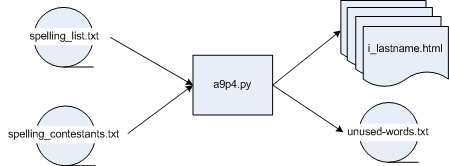

The overall processing flow then is:

The processing steps are straightforward:
get the name of the word list from the user
get the name of contestant list from the user
read in the word list
read in the contestant list
for each contestant
select 10 words at random from the word list
remove the words from the word list (so they will not be used more than once)
write this contestant's html file
write out the reduced word list (unused_words.txt)